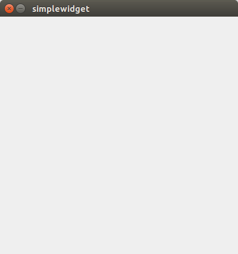
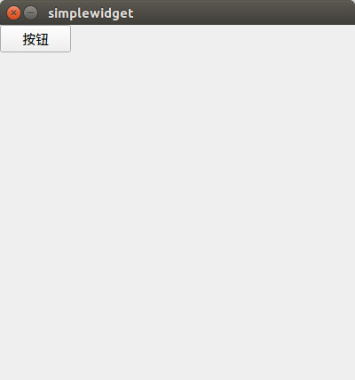
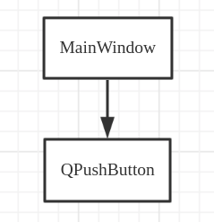

四、Qt对象树模型#
1. 标准Qt窗口控件展示#
我们先安装上面步骤创建标准的Qt窗口，然后在MainWindows.cpp中代码如下:
1 2 3 4 5 6 7 | |
这段代码是要在窗口上添加一个按钮控件
运行程序：

我们发现并没有按钮展示出来，这是为什么呢？
因为
QPushButton btn("按钮");这一段代码定义在方法内部，btn是一个局部变量在构造方法执行完之后就会被销毁，那按钮控件就不存在了
正确添加控件方式
可以将控件对象定义在堆内存中
1 2 3 4 5 6 | |
运行程序：

2. 对象树模型#
上面通过在堆内存中创建控件对象可以正确展示控件到窗口上，但是随之而来也会有一个问题，
如何回收在堆内存中申请的内存btn？
可以在窗口关闭或程序退出的时候统一回收，缺点是实现麻烦，并且很容易忘记回收内存
Qt的对象树模型可以大大简化在堆中申请的内存
对象树模型
QT最基础和核心的类是：
QObjectQt中几乎所有的类都是从
QObject直接或简介继承的
- QObject内部有一个list，会保存children，还有一个指针保存parent
- 当自己析构时，会自己从parent列表中删除并且析构所有的children
对于上面的代码:
1 2 3 4 5 6 | |

MainWindow和QPushButton构成父子关系，当窗口析构时会自动析构子控件这就是Qt的半自动化内存管理，也称为对象树模型
注意：
对象树的父子关系与类的继承关系无关，而是要看是否存在显示上的父子关系